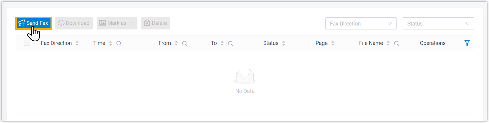
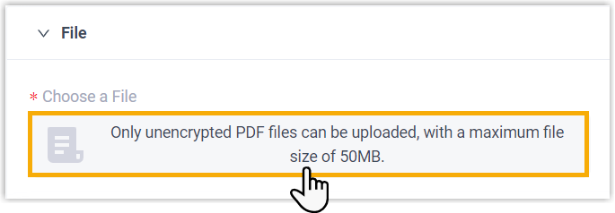
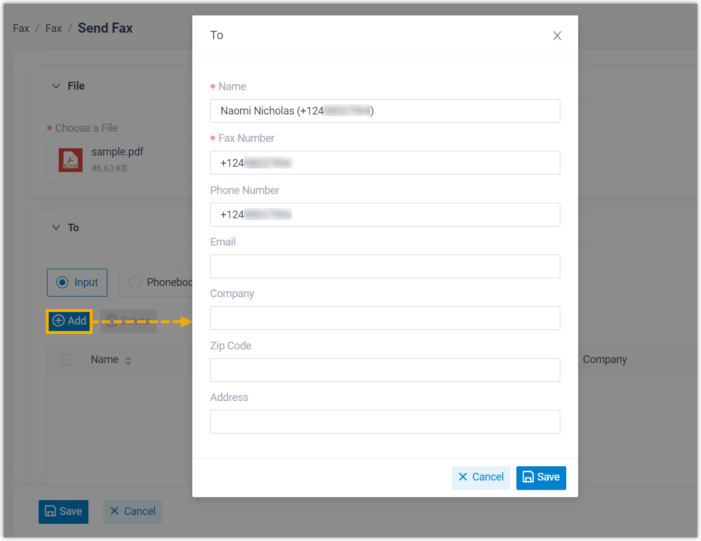
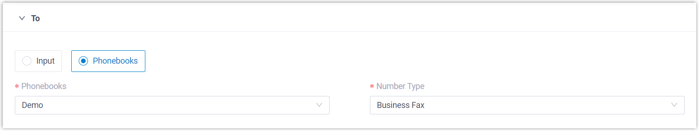
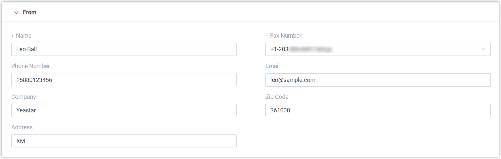
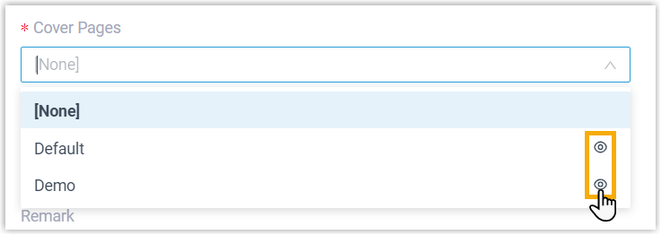
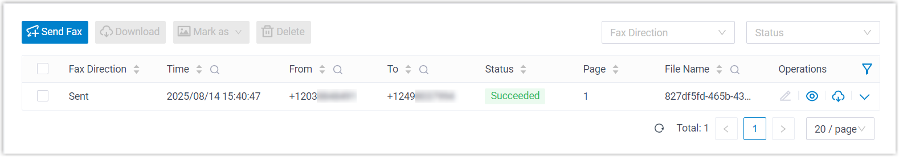

Send Faxes from Linkus Desktop Client
You can send faxes to business contacts directly from Linkus Desktop Client, either to external contacts in your Linkus directory or to a custom number, easily staying connected with business contacts while streamlining communications.
Limitations
Learn about the limitations for sending faxes from Linkus.
- Fax File
-
- File Format:
.pdf - File Size: Less than 50MB
- File Format:
- Fax Recipients
- Each fax supports up to 1000 recipients.
Requirements
System administrator has granted you the permission to send faxes.
Procedure
- Log in to Linkus Desktop Client, go to .
- At the top of the list, click Send Fax.

- Configure outbound fax settings.
- In the File section, click the upload area to
upload the fax file to be sent.Note: Encrypted PDF file is NOT supported.

- In the To section, add fax recipients using
one of the following options.
Option Description Input Manually add a single custom recipient, or selecting one from existing external contacts.
If you choose this option, click Add to specify the recipient information, then save the setting.Note: Fax Number indicates the number to which the fax will be sent.
Phonebooks Automatically add multiple recipients from a phonebook based on the specified number type.
If you choose this option, select a phonebook and a number type.

Note: If there are more than 1000 contacts of the designated number type, the system will send fax only to the first 1000 contacts. - In
the From section, enter the sender
information, and select a fax number to send the
fax.

- In the Settings section, complete the
following settings.
Setting Description Cover Pages Optional. Select a cover page to include in the outbound fax. Note: You can click to preview the
cover page.
to preview the
cover page.
Send Time Specify when to send the fax. - Send Now: Send the fax immediately after saving.
- Schedule Sending: Send
the fax at a scheduled time.
If you choose this option, choose a desired time from the drop-down list.
Remark Enter a short description.
- In the File section, click the upload area to
upload the fax file to be sent.
- Click Save.
Result
The outbound fax task is displayed in the list, and the fax will be sent to the recipient(s) at the specified time.
